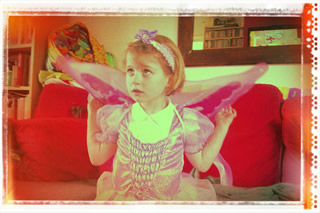

My website
- 通常圖片尺寸不要大於 screen pixel 的 2 倍（不然會造成浪費）
-
1. 圖片保持相同的尺寸(320px)，但不同的分辨率
-
2-1. 使用 img, 不同網頁響應尺寸時, 載入不同尺寸的圖片(不知道為什麼, 讀不到, 囧...)

-
2-2. 使用 picture, 不同網頁響應尺寸時, 載入不同尺寸的圖片

其他圖片筆記
-
1. 避免圖片變形 - 只限制 width | height 其中一種
把尺寸限制放在 parent 層
-
2. 避免圖片變形 - 當成背景圖片
*. 因爲是背景圖片, 必須手動指定高度
*. 其他記得加上 bg-position、bg-size、bg-no-repeat